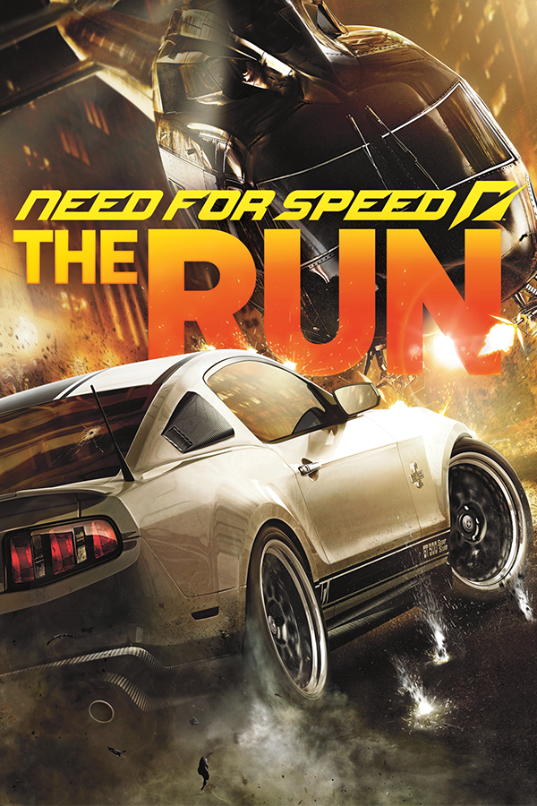

Need for Speed™: The Run
Need for Speed™: The Run
Details
|  | |
| Playtime | Not Played |
| Last Activity | Never |
| Added | 5/7/2025 2:53:42 |
| Modified | 5/7/2025 2:58:21 |
| Completion Status | Not Played |
| Library | Playnite |
| Source | Steam |
| Platform | $PC (Windows) |
| Release Date | 11/15/2011 |
| Community Score | |
| Critic Score | 67 |
| User Score | |
| Genre | Racing |
| Developer | EA Black Box |
| Publisher | Electronic Arts |
| Feature | Multiplayer Single Player |
| Links | Wikipedia Official website MobyGames MobyGames |
| Tag | [Game Engine] Frostbite 2 [HLTB] 01 to 05 hours [People] artist: Kirk Gibsons [People] composer: Brian Tyler [People] director: Justin Wiebe [People] producer: Alex Grimbley [People] producer: Brian Lindley [People] producer: Steve Anthony [People] programmer: Eric Turmel [People] writer: Alex De Rakoff |
Description
Need for Speed: The Run is a 2011 racing video game developed by EA Black Box and published by Electronic Arts. It is the eighteenth installment in the Need for Speed series and is Black Box's final entry in the series before the studio's closure in April 2013. Following an extensive marketing campaign, the game was released on November 15, 2011, for PlayStation 3, Windows, Xbox 360, Nintendo 3DS and Wii.
Unlike previous entries in the series, The Run features an extensive collection of races set against various real-life locations, including the cities of New York, Chicago, Las Vegas and San Francisco, and features a wide variety of real-life cars to drive in. In the game's single-player campaign, players assume the role of street racer Jack Rourke, who is taking part in a large-scale race from San Francisco to New York, seeking to win it against various odds. An assortment of multiplayer modes are also included.
Upon release, the game received mixed reviews from critics. In May 2021, The Run became unavailable for purchase in any online stores, and its online servers were also shut down in August 2021.
Gameplay
Need for Speed: The Run is a racing video game and the eighteenth title in the Need for Speed series. Players take part in street racing across real world locations in the United States. There are over 300 kilometres (190 mi) of road, three times more than Hot Pursuit, making it the biggest Need For Speed game on release. Most event types require the player to overtake opponents to win the race. There are also time attack events and survival events where the players must prevent their vehicle from being destroyed while under attack. Cars are divided into tiers based on performance. During a race, the player can enter a gas station to change the vehicle they are using and perform visual customizations. Unlike previous Need for Speed titles, The Run features sections where the player exits their car and is travelling on foot. Gameplay in these sections is restricted to quick time events.
The driving model of the game is described as "sit somewhere between Shift and Hot Pursuit", not as arcade-styled as Hot Pursuit, but neither as simulator-styled as Shift. The Run employs a large range of real-world vehicles, seemingly taking in the usual mix of muscle cars, street racers and refined exotics, described as "each car presents a different driving challenge for the player". Exclusively digitized for the game is the 2012 Porsche 911 Carrera S and the Pagani Huayra. The damage system is similar to that seen in Hot Pursuit. The cars can be altered with performance upgrades and visual upgrades, such as paint colors and body kits. There are cosmetic body kits known as Style Pack kits and Aero Pack kits, which affect aerodynamics as well as performance.
An experience points (XP) system is used for unlocking cars and events in multiplayer and Challenge Series races. The game also features a Rewind option that allows the player to restart an event to their last checkpoint if they wreck their vehicle or to rewind their vehicle from a collision or missed opportunity. Rewinds are only available in limited quantities as their amount depends on the difficulty level that the player has selected; Easy has 10 Rewinds, Normal has 5 Rewinds, Hard has 3 Rewinds, and Extreme has 1 Rewind, as well as the most difficult AI opponents.
Additionally, Need for Speed Autolog, the Need for Speed franchise's social competition functionality, which was introduced in Hot Pursuit and was previously used in Shift 2: Unleashed, is also back as it continues to track career progression and compare game stats.
Multiplayer
Up to eight players can participate in a single online match. Players are able to party with friends, pick a playlist of their favorite challenges and compete for supremacy across every stage of game. In addition to this, players never have to wait in a lobby again even if they are joining a race in progress. The multiplayer matches are split into differing game type playlists, such as Supercar Challenge, NFS Edition Racing, The Underground, Mixed Competition, Exotic Sprint, and Muscle Car Battles. Most of these modes pertain to different car varieties for each race, but the Supercar Challenge is meant entirely for the fastest cars on the fastest tracks. The player can select an event and vote towards the race course where the multiplayer game should be taking place on. Players also take part in a reward system known as "The Bonus Wheel", which randomly selects a reward and required goal criteria for it.
The game is similar to Need for Speed: Hot Pursuit. Players race down freeways until they meet a police car. The police then try to chase them down and wreck their car. They also encounter other objectives such as a straight-up race. There is another mode where players 'duel' a rival. They can also race to toll booths that double as checkpoints.
The 3DS version also features Autolog, which is integrated throughout the career mode and uses 40 in-game challenges scattered throughout the campaign. The game also takes advantage of StreetPass, letting players upload their best Autolog scores to other Nintendo 3DS devices. In multiplayer, the game features a straight race mode where eight people compete. There is also a four-on-four Cops vs. Racers mode. The game supports Wi-Fi and local wireless connections. However, the Wii version lacks online play, yet it has split-screen multiplayer.
Plot
Black Box version
Jack Rourke (Sean Faris), an experienced street racer, finds himself in serious trouble with the Mob due to a massive debt with them. After narrowly escaping being crushed within his car at a scrapyard in Oakland, due to his failure to repay what he owes, Rourke evades his captors by stealing one of their cars. Heading to San Francisco, he makes contact with his friend Sam Harper (Christina Hendricks), a fixer who arranges his entries into street races, who offers to help him deal with the mob on one condition - Rourke must enter an illegal, large-scale street race from San Francisco to New York City, for which she will front the entry fee, and win the race's cash pot of $25 million for her. Rourke agrees to her condition, knowing that he will be allowed to keep 10% of the prize money for himself, and receives a tablet device from the race's mysterious organizer that details the race's route.
4 hours later, Rourke selects a car from his personal garage, and begins the race by completing three stages covering the route from San Francisco to Las Vegas, learning he must be in the top 150 before reaching the end of the third stages to stay in the race. In addition to dealing with other racers, seeking to win the cash prize, and the local police, who seek to stop and arrest the racers involved, Rourke finds himself attempting to defeat Marcus Blackwell - a family member of the Mob, who wants to ensure his defeat after he escaped his execution. Rourke manages to win all three stages, but is caught out by a police roadblock, forcing him to evade the cops and secure a new vehicle for the next four stages of race from Las Vegas to Chicago, learning he must be in the top 50 to keep in the race.
As Rourke holds out against the increasing efforts of his rivals and police to stop him, he soon finds the Mob entering the race to stop him. Despite reaching Chicago in the top 50, the Mob catch him out with a roadblock, forcing him to lose them initially in a police cruiser. Upon securing a new car for the remainder of the race to New York City, Rourke contends with both the police, the Mob, and an armed helicopter along the next stage of the route, but evades both sides and reaches a garage that can supply him a new vehicle, at Harper's request, to compete against the top drivers. As the police step up their efforts, Rourke evades capture, overcomes his rivals, and defeats Blackwell in New York to win the race. Afterwards, Rourke meets with Harper in a streetside diner, who reveals his trouble with the Mob has been dealt with. Harper gives Rourke a key to a safety deposit box containing his cut of the prize money and suggests that he takes time to relax, but upon seeing him question this, she offers him an opportunity to double his money, stating she got a call to another high-stake race.
Matt, a former pro racer, wakes up in his Ford Mustang that has been pushed into the ocean in San Francisco by members of the Mob, and breaks out of his car, only to spot a mysterious woman and drive to the start of The Run on the Golden Gate Bridge in her Lotus Exige. Several miles into The Run, Matt then takes out a Mustang driven by a mystery man who was terrorizing them and ends up stealing it, before hitting a broken glass bottle. After repairing the Mustang and performing a heroic jump, Matt and the mystery woman are then ambushed in Death Valley by the mystery man in a Dodge Challenger on the way to Las Vegas, only for the driver to reveal himself as Matt's old accomplice, Jason. The next day, the mystery woman replaces the Mustang with a rented Chevrolet Camaro ZL1, and Matt reminisces about his and Jason's racing career, as well as their friend Wynona, who was killed on the track after taking the keys to one of the race cars.
As The Run advances to Colorado, Matt rescues Jason and offers him a ride to Denver. In Denver, the rented Camaro is replaced with a Nissan GT-R and both Matt and the mystery woman are ambushed by the Mob, who are revealed to be the Di Marco crime family. They escape by jumping on a train and taking an Aston Martin One-77 en route to Chicago. The next day, the mystery woman leaves Matt, who later gets picked up by Jason in a Porsche 918, which later gets repainted blue as they drive to one of Jason's "Chevy Metal" dealerships. Now equipped with a Lamborghini Sesto Elemento, Matt and Jason tune into the Mob's radio feed and discover the Mob's plans to visit Dickson Farm and Matt takes a Mustang from a semi-truck to Dickson Farm, when the mystery woman is handcuffed and Matt is attacked by the Mob.
Having uncovered a Pagani Huayra and rescuing the mystery woman, the mystery woman explains her ties to the Mob, carrying a briefcase which contained evidence against the family in the process. She admits to using Matt as a courier to sell the evidence and disappear, before the family betrayed her. On their way to New York City for the final stage of The Run, Matt races his way to Times Square, only to realize that The Run was a setup by the police and the Mob. After escaping and ditching the briefcase, the mystery woman reveals her name to be Sophia Di Marco as the two drive to Canada.
Development
Since the release of Undercover, Black Box had been working on another entry to the franchise, presumably continuing the action focused street-racing gameplay of Black Box's previous titles. This game had an extended development window to give the developers a chance to create a game that "could really blow the doors off the category". It was confirmed that the game would feature a fictional storyline and characters. The game was first hinted early in November 2010 by Senior Vice President of EA Games Europe, Patrick Söderlund in an interview with Eurogamer, before the release of Hot Pursuit. Söderlund stated he wanted to alternate developers to give them time to make a good game. Eurogamer's Robert Purchese asked, "You say there will be an arcade NFS game every year in November, but next year's game won't be developed by Criterion. Is it Black Box?", Söderlund stated "You can assume that, yes. Yes. I would say so, yes."
The game was originally set to be revealed at E3 2011, however, on April 28, 2011, a listing for Need for Speed: The Run appeared on UK retailer site ShopTo. Later, EA released the teaser trailer for all to see. On April 29, the firm confirmed the game's details. EA Games Label president, Frank Gibeau stated that Need for Speed: The Run would offer "an edgier experience" than previous entries in the racing series.
The Run's lead development platform was the PlayStation 3. At E3 2011, it was announced that the PlayStation 3 version of the game includes seven exclusive cars, including the Bugatti Veyron Super Sport, Hennessey Venom GT, Lexus LFA, Gumpert Apollo Sports, Lamborghini Countach 5000QV, Koenigsegg Agera R and Porsche Carrera GT.
EA Black Box stated that the Frostbite 2 engine allowed The Run to look stunning, stating that Frostbite 2 was not only the best engine it had used in a game to date, but "the most versatile" too. According to designer Alex Grimbley, it apparently took a year to re-purpose the tech for driving rather than shooting. The EA Black Box team, especially the artists, coders and designers, for the first time, worked collaboratively in small groups on The Run. Executive producer Jason DeLong stated that the Frostbite engine provided a more detailed cinematic environment and experience to the game. The Run was the first non-DICE game to use Frostbite 2, but Black Box did collaborate with DICE to make certain that the engine was used properly, with DeLong commenting that the collaboration allowed for a "very deep racing mechanic of handling physics into the game".[citation needed] Executive producer Jason DeLong claimed that the studio used DICE's Frostbite 2 engine for The Run as it was intent on making a "Hollywood" experience and to give the game a more cinematic feel than past story-based Need for Speed titles.
The Run's producer Alex Grimbley confirmed that The Run would not feature any form of vehicle customization, stating: "We decided against customization because that is not what The Run is about. It is an understandable stance given that is a whole new direction for the franchise. We want to focus on the story and the race itself." However, this statement was retracted after some trailers and screenshots of the game featured visually modified vehicles. A GameSpot trailer released on November 2, 2011, officially confirmed that body kits and selectable body paints can be placed on vehicles.
When asked why The Run is from San Fran – New York rather than LA – New York, game's producer Brian Lindley replied: "That's a good question. I think we were maybe looking for more of a direct route. It's more of a straight line route rather than being sort of corner to corner. But also, San Fran has some iconic landmarks and things like the bridge and the downtown. Also, what we can do with the environment with things like fog, it makes it of a bit cooler place to drive than LA. And my experiences driving in LA are largely being stuck in traffic! So that's the primary reason, it's just a cooler looking start for the game." Black Box PR Manager Dana Sissons stated that The Run was going to be more exciting, more varied, and bigger than ever. The race from San Francisco to New York was full of new race modes, tons of different terrain, and a few "Michael Bay movie moment" avalanches to keep you on your toes.
The Run is powered by DICE's Frostbite 2 game engine, making the game the first non-shooter and one of the first console titles to use the engine.
Marketing and release
Prior to its release, Need for Speed: The Run was marketed and promoted heavily through the use of numerous Internet and TV trailers. Famed Hollywood action director Michael Bay directed a TV advertisement for the game. The advertisement features explosions, car crashes, supercars and police vehicles. In addition to the standard edition, a Limited Edition of the game was announced, which was available through pre-order. The Limited Edition features numerous bonuses over the standard edition, including exclusive packaging, three exclusive cars (the Lamborghini Aventador, Chevrolet Camaro ZL1 and Porsche 911 Carrera S) and five exclusive challenges with bonus rewards and achievements.
There were three pre-order offers through several retail outlets. Each pre-order consisted of two bonus cars and three events inspired by the "exclusive" Challenge Series, which depended on the outlets the player pre-ordered the game. The three "exclusive" Challenge Series on offer were inspired by EA Black Box previous Need for Speed games Underground, Most Wanted and Carbon. The Underground Edition Nissan 370Z (Z34) and Underground Edition Nissan Skyline GT-R (R32) are included in the Need for Speed The Run Underground Challenge Series as bonus cars, while the Most Wanted Edition BMW M3 GTS and Razor's Mustang Boss 302 are included in the Need for Speed The Run Most Wanted Challenge Series as bonus cars, and the Carbon Edition Corvette Z06 (C6) and Darius' Audi R8 V10 are included in the Need for Speed The Run Carbon Challenge Series as bonus cars. Buying the game through Origin came with two special offers. Those who pre-ordered the game received a PC Digital download for one of five past Need for Speed titles (Hot Pursuit, Shift 2: Unleashed, Shift, Undercover and Prostreet). The Need for Speed The Run Carbon Challenge Series was also included as a pre-order bonus. This offer was only available until November 14, 2011. Those who bought the game after November 14 through Origin received a discount on seven EA racing titles, which included The Run, Shift 2: Unleashed, Shift, Hot Pursuit, Undercover, Prostreet and Burnout Paradise. This offer was available until December 31.
To promote the game in Europe, EA and Need for Speed conducted the 2011 Need for Speed European Spokesmodel Search. This continent wide search was set to discover two women with boundless energy, an outgoing personality and an edgy style fused with a passion for cars and gaming. The winners acted as Need for Speed ambassadors at events throughout 2012, including representing Need for Speed products at high-profile gaming events across Europe and the Team Need for Speed racing team in the prestigious FIA GT3 European Championship and Euro Drift program. Models searches were being conducted in five territories: France, Germany, Norway, Russia and the United Kingdom. Finalists was selected from each territory with the final two winners being announced in November 2011 in conjunction with the release of Need for Speed: The Run. To promote the game in US, Canada and UK, EA announced a competition, giving away one 2012 Porsche Carrera S. All the competitions had to do was enter by logging in with the EA account, or register for free.
Electronic Arts and Sports Illustrated announced a marketing partnership for the Need for Speed franchise, "bringing together the worlds of fashion, video games, cars and beauty in a first-of-its-kind partnership." EA announced that the likenesses of 2011 Sports Illustrated swimsuit issue cover model Irina Shayk and model Chrissy Teigen appears in the game as part of a promotional deal struck between the game publisher and popular sports magazine. The cross promotion isn't limited to the models appearance in the game. Sports Illustrated is a featured advertiser on billboards that appear in the gamescape. Sports Illustrated offered a bundle that saw buyers receive a six-month "All Access" subscription to Sports Illustrated, a copy of Need for Speed: The Run for PlayStation 3 or Xbox 360, and a Making of Need for Speed: The Run documentary DVD starring the two swimsuit models. EA also collaborated with Adidas to produce 100 pair of shoes tied into Need for Speed: The Run. The first 50 pair of shoes was available at the Adidas Originals Chicago store on October 10, with another 50 available at the San Francisco store on October 22. The first to purchase the shoes was invited to "exclusive kick-off" events at the stores a few days later.
A demo of the game was released on Xbox Live first on October 18 (expired on November 1) and PlayStation Network on October 19 (also expired on November 1), a month ahead of the game's launch. The demo featured two levels: Desert Hills, California and Independence Pass, Colorado in a Lamborghini Gallardo LP 550-2 Valentino Balboni, and supported a "refer a friend to download the demo" feature giving players access to a 2012 Porsche 911 Carrera S. Autolog also implemented in the demo, allowing the player to compare best times with friends across the two tracks. Need for Speed teamed up with HP and Vagrant Records to let fans decide which of the favorite bands they would like to see in The Run. The fans got a choice to vote for their favorite song and artist, which includes the song "Mama Taught Me Better" by Black Rebel Motorcycle Club, "Solar" by MonstrO and "Tropical Depression" by The Night Marchers, on The Run's official website.
Downloadable content
The first post-launch downloadable content (DLC) package, titled "Signature Edition Booster Pack", features nine new cars, all modified to insane levels ranging from a "Venom" Nissan 370Z to a "Falken" Porsche 911 GT3 RS 4.0. The second post-launch DLC package, titled "Italian Pack", features seven new cars (Alfa Romeo 8C Competizione, Lancia Delta HF Integrale Evoluzione, Lamborghini Diablo SV, Lamborghini Gallardo LP 570-4 Superleggera, Pagani Zonda R, Maserati GranTurismo MC Stradale, Maserati MC12) and ten new challenge events added into Challenge Series. The third DLC is the Heroes and Villains pack which features all the pre-order vehicles available for download.
Reception
Need for Speed: The Run was met with mixed reviews. Aggregating review website Metacritic gave the PlayStation 3 and Wii versions 64/100, the Xbox 360 version 68/100, the Nintendo 3DS version 65/100, and the PC version 69/100.
The first review was published by Game Informer, which gave the game 7.75 out of 10, saying that "Need for Speed: The Run is by no stretch a bad game; it just fails to capitalize on its chances. San Francisco to New York is a long haul, and it's even longer when not enough happens in between." A couple more positive reviews include GameTrailers, which gave it an 8.4 out of 10, writing "Need for Speed: The Run falters with its high-profile but underdeveloped plot as well as some awkward design choices. However, it overcomes these potholes with courses that are a blast to drive and simple multiplayer that keeps you hooked in."
IGN gave it a 6.5 "Okay" rating, stating "All this awesome racing action gets somewhat lost amid the nonexistent story, the dumb/scripted AI, the lack of options, and the overall shortness of the game. The Run is not a marathon racing game, it's a quick and dirty drag race." 1UP gave it a C+, stating "The Run takes an awkwardly serious approach to its story (...) to deliver a cross-country campaign that's sometimes exhilarating, but often frustrating and surprisingly banal." Eurogamer gave it 5 out of 10, saying "The worst of the game's technical sins is performance, with appallingly low frame rates in our patched PS3 retail version when you brake suddenly or drift through many a corner." GamesRadar was more positive to the game, which gave it 8 out of 10, and stated "It's possible Need for Speed The Run won't provide as many hours of entertainment as previous NFS games, but then it packs in unique events and some incredibly exciting chase sequences, meaning it packs a lot of entertainment-per-hour. It's not very forgiving of mistakes, but then it provides greater rewards as a result."
VideoGamer gave it 6 out of 10, saying "The Run certainly isn't terrible, and a big improvement on Black Box's previous effort, Undercover, but it needed more moments like the avalanche and less monotonous freeways. With the campaign over in an afternoon and the rest of the package failing to offer anything to keep you playing, The Run is some decent throwaway fun that will be forgotten as soon as you move on to something else." GamePro gave it 6 out of 10, writing "The journey across America is beautifully rendered, capturing the varied landscapes spectacularly as you travel over the Sierra, across the Great Plains, and head towards the East Coast. The quality of the movies is very good too, and the characters' faces are nicely rendered to convey emotion. But the story and the gameplay just don't hold up their side of the bargain, and the game ends up falling short of its considerable potential."
Edge gave it one of its lowest scores, a 3 out of 10, saying "The notion that playing games is a waste of your time is nonsense, of course, but... stuffed with a procession of long-winded loading sequences, protracted menu flipping and unskippable cutscenes, it often feels like there's as much watching as there is playing. Time wasted, in other words." They criticized the many technical and graphical glitches, saying "sometimes the lighting effects mix textures into strange oily swirls, while at other times it feels like you're driving one big polygon." However, in the post script, they did concede that, while flawed, the game does have a clever concept and occasionally delivers those rare feelings of escapism that many arcade-style racers strive for: "The Run may not have much else going for it, but in its unusual approach to the genre it at least tries to do something new."
Despite the mixed reception, the Academy of Interactive Arts & Sciences acknowledged Need for Speed: The Run with a nomination for "Outstanding Achievement in Sound Design" during the 15th Annual Interactive Achievement Awards.